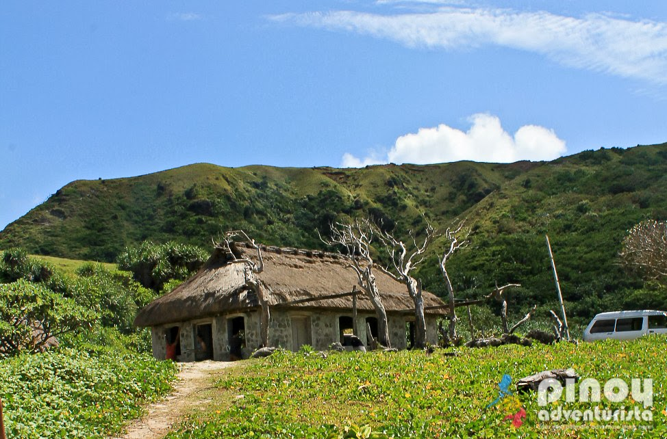
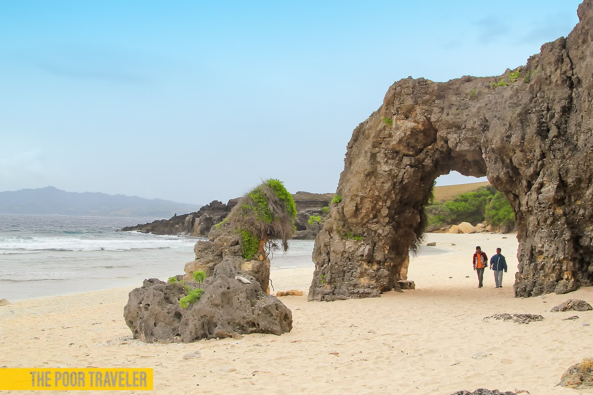

15 min
Airport
It is one of two airports in the Batanes Islands, the other being Itbayat Airport. It is located in the provincial capital, Basco.
Address: CXXG+MC4, Basco, Batanes
Code: BSO
Elevation: 89 m
Journey
From Manila, fly via Philippine Airlines or SkyJet to Basco, Batanes. At the airport, you may hire a tricycle to take you to Ivana Port (P220-250/ride). You might want to consider going the next day because the boat to Sabtang usually leaves at around 6:30am (which you will miss on the day you arrive in Basco.) At the Ivana Port, board the faluwa, the traditional Ivatan boat, to San Vicente Port in Sabtang Island (P100). A tricycle tour from here will take you around the island and make a stop at many of the attractions including Morong Beach. Tour costs P1000, maximum of 2 persons by tricycle.
Accomodations
Most tourists visit Sabtang on a day tour only, which means they return to Batan Island in the afternoon. They usually stay in Basco. If you really wish to stay overnight in Sabtang, contact your guide and have him arrange an accommodation with you at a local high school (P250) or a homestay with an Ivatan family.

Restaurants
Paypanapanayan Canteen is where most guides take tourists. It is the usual lunch stop of the Sabtang Island Tour. Meal costs P350 per head. However, there are a few other carinderias in the area near the port.

What's Popular
Don't miss the iconic Nakabuang Arch. Don’t forget to take a photo under the arch! Of all the beaches fringing the coast of Sabtang Island, Morong Beach is probably the most well-known. Thanks to the large rocky arch that has become an icon not just of the island but Batanes as a whole.
Nearest Spots
Check out the other attractions on the island. A tricycle day tour costs P1000, good for 2 persons. It will take you to at least five of the best places in Sabtang including Chavayan Village, Tinyan Viewpoint, and Sabtang Lighthouse.